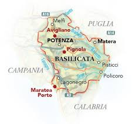

| Nome |
Basilicata |
| Capoluogo |
Potenza (PZ) |
| Data di Istituzione |
1948 |
| Altitudine media |
633 m.s.l.m |
| Superficie |
10.073 km^2 |
| Abitanti (agosto 2023) |
533.601 |
| Densità |
53 ab/km^2 |
| Comuni |
131 |
| Province |
Matera (MT) |
| Confini |
Calabria, Campania, Puglia, Mar Ionio |
| Patrono |
Gerardo Maiella, Madonna Nera di Viggiano |
| PIL procapite (2018) |
22.200€ |
Posto da visitare assolutamente: Sassi di Matera - Matera (MT)
I Sassi di Matera sono una delle attrazioni più caratteristiche
e iconiche dell'Italia.
Matera è una città situata nella regione della Basilicata,
nel sud del paese, e i suoi Sassi sono un complesso di antiche abitazioni
scavate nella roccia calcarea.
Ecco alcuni dettagli su questa straordinaria area:
Origini antiche:
I Sassi di Matera rappresentano uno degli insediamenti urbani più antichi
al mondo, con origini che risalgono a millenni fa.
Gli insediamenti rupestri hanno inizio nel Paleolitico e nel Neolitico,
e alcune abitazioni rupestri risalgono a più di 9.000 anni fa.
Struttura architettonica:
Le abitazioni nei Sassi sono scavate direttamente nella roccia calcarea,
dando loro una caratteristica forma di grotta. Le case sono spesso
sovrapposte in modo irregolare e collegate tra loro da stradine tortuose
e scale scavate nella roccia.
Sassi di Matera: Sasso Caveoso e Sasso Barisano:
I Sassi di Matera sono suddivisi principalmente in due parti:
Sasso Caveoso e Sasso Barisano.
Il Sasso Caveoso è caratterizzato da abitazioni più primitive
e grotte naturali, mentre il Sasso Barisano mostra una maggiore
evoluzione delle abitazioni con parti costruite in muratura.
Patrimonio dell'UNESCO:
I Sassi di Matera sono stati dichiarati Patrimonio dell'Umanità dall'UNESCO
nel 1993. Questa designazione è stata assegnata per la loro importanza storica,
culturale e architettonica.
Chiese rupestri:
Matera è nota anche per le sue numerose chiese rupestri.
Alcune di queste sono interamente scavate nella roccia,
mentre altre sono costruite all'interno delle grotte preesistenti.
Tra le chiese più famose ci sono la Chiesa di San Pietro Caveoso
e la Chiesa di San Pietro Barisano.
Il Palombaro Lungo:
Il Palombaro Lungo è un sistema di cisterne sotterranee che si
trova sotto i Sassi di Matera.
Questo sistema fu costruito per raccogliere e conservare l'acqua piovana,
essenziale per la vita nella città.
Rinascimento dei Sassi:
Dopo un periodo di degrado, negli anni '50 e '60 del XX secolo,
Matera è stata oggetto di un processo di riqualificazione
che ha portato a una rinascita dei Sassi.
Oggi, molte delle antiche abitazioni sono state restaurate e
trasformate in hotel, ristoranti, negozi d'arte e musei.
Set cinematografico:
I Sassi di Matera sono stati scelti come location per numerosi film,
tra cui "The Passion of the Christ" di Mel Gibson e "The Nativity Story."
La suggestiva atmosfera e l'architettura unica dei Sassi li rendono una
scelta ideale per le produzioni cinematografiche.
I Sassi di Matera sono quindi un luogo unico nel loro genere,
testimoniando la storia millenaria della città e offrendo ai visitatori
un'esperienza straordinaria nel cuore di Matera.